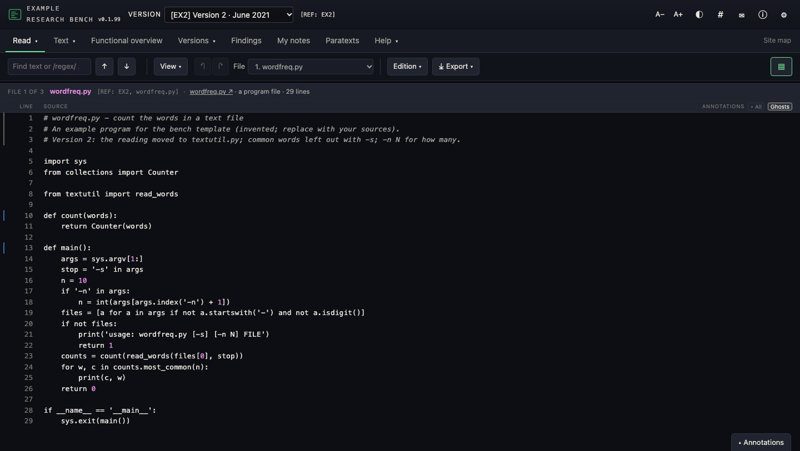
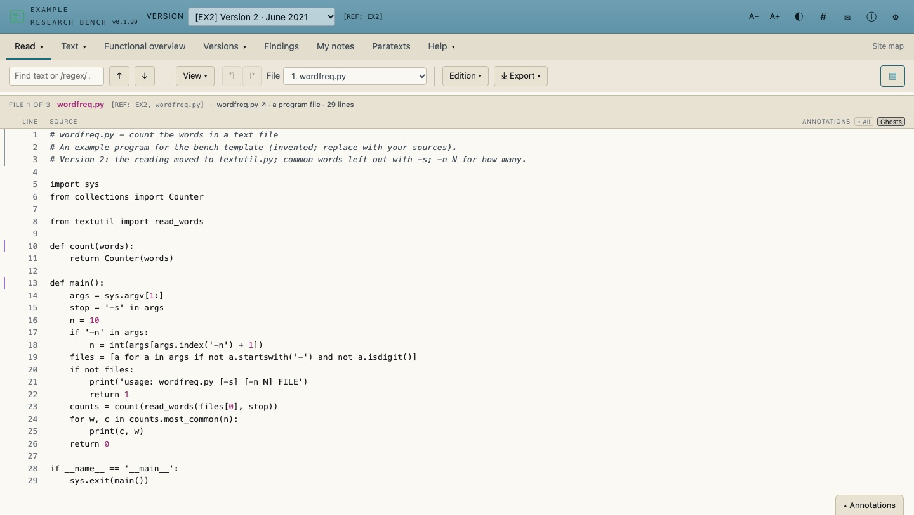
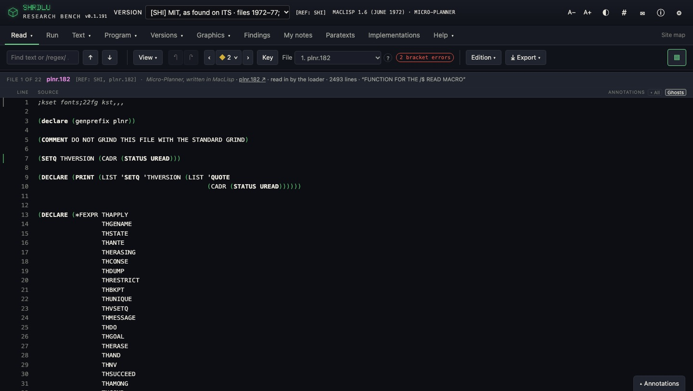
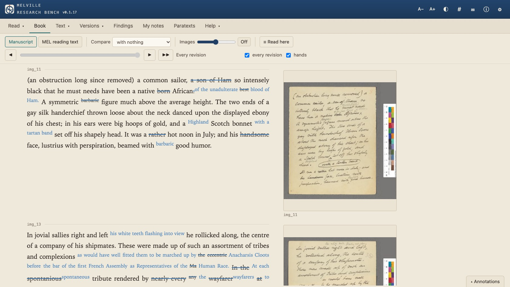
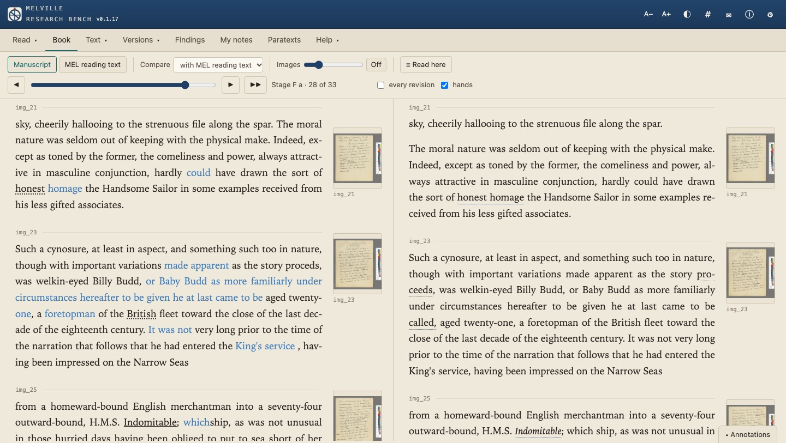

What it is
bench-kit is the plain JavaScript and CSS that the research benches for SHRDLU, Spacewar!, ELIZA and Melville share: each version of a program or text set out line by line, any two collated, their descent drawn as a stemma, and annotations kept in a private Hypothesis group. A bench includes the kit as a git submodule, gives its own names, sources and language in a configuration file, and is served as a static site by GitHub Pages, with no build step and nothing to install.
Read
Each version's files as held, with search, highlighting, a citation for any line or range, a reading edition, and export to Word and Markdown.
Collate
Two versions as text, routine by routine, or definition by definition where both are Lisp.
Genealogy
A stemma of the versions, and flows and trees of what each keeps from its parent, moves, edits or drops.
Book
A text whose reader gives its structure (TEI, say) set as pages beside their images, with a slider through the stages of revision.
Annotation
Through a private Hypothesis group, with replies and reactions; an annotation shows as a ghost on the matching lines of other versions.
Paratexts
Scans, documents and recordings in a private GitHub repository, catalogued in Dublin Core and arranged in collections and sequences.
Implementations
A catalogue of a program's copies, ports and reimplementations, drawn as a tree with the evidence for each line of descent.
References
A short reference for every version and file, and a Software Heritage identifier for each source.
Quick start
A new bench starts from bench-template, which runs on an invented example (two versions of a small Python program and a lost first sketch) with the kit in place.
Prerequisites
- To run a bench: git, Python 3 (for a local web server; any static server will do) and a current browser.
- To run the kit's checks (
tools/test.js,tools/views.js): Node 22 or later, and Google Chrome or Chromium. No npm packages. - The steps below were run on macOS with git 2.54, Python 3.14, Node 22.22 and Chrome. The tools also look for Chrome at
/usr/bin/google-chromeand/usr/bin/chromium, and the kit's own CI runs them on Ubuntu.
Steps
- On GitHub, open bench-template and choose Use this template to make a repository of your own.
- Clone it with the kit, and serve the repository's folder (not
research/):
git clone --recurse-submodules https://github.com/YOUR-ORG/YOUR-BENCH cd YOUR-BENCH python3 -m http.server 8000
- Open
http://localhost:8000/research/. - Replace the example: the sources under
source/(a folder for each version), the versions and their descent inresearch/js/versions.js, the names, language and references inresearch/js/config.js. The template's README takes each file in turn; the kit's README lists every setting. - On GitHub, turn on Pages (Settings ▸ Pages, the main branch, root). The bench is then at
https://YOUR-ORG.github.io/YOUR-BENCH/research/.
To look before making a repository, clone the template itself: git clone --recurse-submodules https://github.com/critical-code-studies/bench-template.
Usage
Each example was run on a fresh clone of bench-template 0.1.99 (bench-kit 0.81.0) on 27 October 2026; the output is as printed.
Serve a bench and open it
python3 -m http.server 8000 ::1 - - [27/Oct/2026 14:11:56] "GET /research/ HTTP/1.1" 200 -
The browser at http://localhost:8000/research/ shows Read on the example's version 2 (the first screenshot in 04).
Run the kit's tests in a bench
The kit's tests run in the bench's own page, in headless Chrome, so they check the kit with the bench's settings and versions. From the repository's folder:
node research/kit/tools/test.js tests/annotations.html: 156 passed
Open every view, with this bench's kit or another
tools/views.js opens each view in turn and fails on one that throws, draws nothing, or shows that it could not load. With --kit it serves a kit from another folder in place of the bench's own, so a kit change can be tried in a bench without changing the bench.
node research/kit/tools/views.js Example Research Bench 0.1.99, kit 0.81.0 ✓ read ✓ analyse ✓ functional ✓ compare ✓ genealogy ✓ about ✓ findings ✓ notes # with a kit checked out beside the bench: node research/kit/tools/views.js --kit ../bench-kit
The kit's own workflow runs both tools in all five repositories (the four benches and the template) on every push.
Screenshots
Every bench has the colour themes of ⚙ Settings ▸ Display, four dark and three light; the ◐ button switches between the last of each.


wordfreq.py, version 2.bench-template 0.1.99, bench-kit 0.81.0 · 27 October 2026




plnr.182, Micro-Planner written in MacLisp, in the MIT files as found on ITS, with the stepper (◆) through the version's repairs in the toolbar.SHRDLU 0.1.191, bench-kit 0.69.0 · 21 October 2026





Configuration and tokens
A bench has no server, no environment variables and no API keys of its own. Its settings are in research/js/config.js, read by the browser. Two services take a personal token, and both are optional: without them a bench reads, collates and draws as usual, keeps annotations as drafts in the browser, and does not open the paratext archive.
Each person pastes their own token into ⚙ Settings. It is kept in that browser's localStorage, under the bench's storage prefix (store in config.js), and is left out of Help ▸ Back up everything. Nothing is sent anywhere but the service it belongs to.
Hypothesis API token, for shared annotations
- Provider
- Hypothesis. An account is free.
- Get it
- Signed in, at hypothes.is/account/developer, where Hypothesis makes and shows your token.
- Where it goes
- ⚙ Settings ▸ Annotations: the group link from your invitation in Group link or ID (it is reduced to the ID), the token in API token. Stored as
<store>groupand<store>token. - Bench setting
- The private group's ID, as the default for everyone, in
config.js; members join through the bench's invitation (Help ▸ Joining the annotation group).
group: 'AbC123xy', // the private Hypothesis group's IDTo check it: Settings ▸ Annotations ▸ Test connection. A working token and group give Connected as acct:NAME@hypothes.is; group “GROUP” found.
| Message | What it means |
|---|---|
| The token was not accepted. | Hypothesis does not know the token (it answers as for a visitor who is not signed in): it was mistyped, revoked or replaced. Generate a new one and paste it again. |
| Connected as acct:NAME@hypothes.is; but that group was not found for this account. | The token works, but the account is not a member of the group in Settings: accept the invitation, or check the group ID. |
| Hypothesis 4xx: … | Any other refusal, with the first part of Hypothesis's own reply. |
GitHub fine-grained token, for the paratext archive
- Provider
- GitHub. Free; the archive is a private repository the bench names, and each member must be given access to it.
- Get it
- Settings ▸ Paratexts ▸ Open the token form. The bench opens github.com/settings/personal-access-tokens/new with the name, owner, a year's expiry and Contents (read and write) filled in; choose Only select repositories and the archive by hand.
- Where it goes
- ⚙ Settings ▸ Paratexts ▸ GitHub token. Stored as
<store>gh.token. - Bench setting
- The archive's owner and repository, and the name of the browser cache, in
config.js. - Limits
- GitHub allows an authenticated user 5,000 REST requests an hour; without a token it is 60. The bench caches the catalogue and files it has fetched in the browser.
paratexts: { org: 'YOUR-ORG', repo: 'your-bench_paratexts', cache: 'your-bench-paratexts' },To check it: open the Paratexts tab; with a working token the catalogue loads. The token is read and write, so give the steps (Settings ▸ Paratexts ▸ Copy the steps to send) only to people who are to catalogue.
| Message | What it means |
|---|---|
| The GitHub token was refused: check it in ⚙ Settings. | HTTP 401: the token is wrong, revoked or expired. |
| GitHub refused: the token may lack write access to OWNER/REPO, or the rate limit is reached. | HTTP 403: the token was made without Contents read and write, or the hourly limit is used up. |
| Not found: the token may not reach OWNER/REPO (ask to be added to the crew). | HTTP 404: the archive was not chosen under Only select repositories, or the account has no access to it. |
Local and deployed
Browsers keep localStorage for each origin, so http://localhost:8000 and https://YOUR-ORG.github.io hold separate settings: a token pasted while testing locally has to be pasted again on the published bench. The same token works in both. Safari clears a site's stored data after seven days without a visit; the token then has to be pasted again, or a new one made if it was not kept.
Settings ▸ Bench
Since 0.81.0 a bench whose config.js says editable: true, and which loads kit/project.js straight after js/config.js, lets its user set the name, title, citation, references and language in ⚙ Settings ▸ Bench. The GitHub locations there (the repository, the published address, the paratext archive) are locked once set: changing one takes Unlock, with a warning, and the new value typed a second time, and each change is logged with Put back. bench-template loads project.js with editable: false.
Troubleshooting
- Access to fetch at 'file:///…/source/v2/wordfreq.py' from origin 'null' has been blocked by CORS policyThe bench was opened as a file. It reads its sources over HTTP, so serve the repository's folder (
python3 -m http.server 8000) and openhttp://localhost:8000/research/. - Could not load · Could not fetch v2/wordfreq.py (404)The server was started in
research/, sosource/beside it is out of reach. Start it in the repository's folder. The test tools fail the same way when run fromresearch/: run them from the repository's folder, or give--dir. - Failed to load resource: 404 (File not found) …/research/kit/versionlist.js; TypeError: Cannot read properties of undefined (reading 'BENCH')The repository was cloned without its submodule, so
research/kitis empty. Rungit submodule update --initin the repository's folder. - OSError: [Errno 48] Address already in useSomething else is serving on that port (Errno 48 on macOS, 98 on Linux). Use another:
python3 -m http.server 8001, and open that port. - Failed to load resource: net::ERR_CONNECTION_RESET …/research/kit/genealogy.jsPython's built-in server dropped some of the many files a bench asks for at once. Reload, or serve with a longer queue:
python3 -c "import http.server as h; h.ThreadingHTTPServer.request_queue_size = 256; h.test(h.SimpleHTTPRequestHandler, h.ThreadingHTTPServer, port=8000)" - After moving to a newer kit, the bench still behaves as it did before the moveThe browser kept the old modules. Every script and stylesheet in
research/index.htmlcarries?v=with the bench's version; raise them all together, whichnode research/kit/tools/release.js next "…" --kit vX.Y.Zdoes (it printedresearch/index.html: 47 × ?v=0.1.99for bench-template). Then reload with the cache bypassed. - no Chrome or Chromium found; give its path as CHROME=The test tools could not find a browser in the usual places. Give its path:
CHROME=/path/to/chrome node research/kit/tools/test.js. - Annotations show as drafts only, or the paratext archive asks for a token, on the published benchTokens are kept per origin, so the ones pasted on
localhostare not ongithub.io. Paste them in ⚙ Settings on the published bench (section 05).